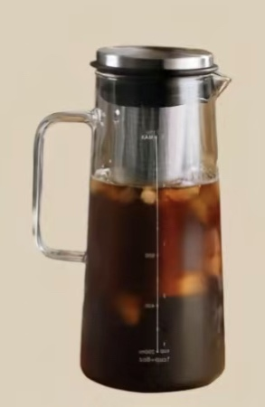
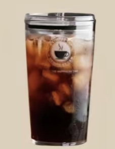
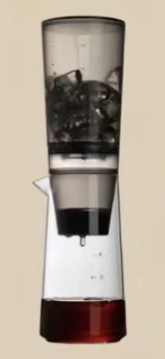
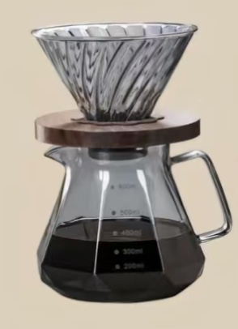

Cold Brew
Coffee powder + water immersion
Mode: Immersion extraction
Taste: Bitter with low acidity
Time: 8-24h

Ice Americano
Concentrate + water + ice
Method: High-pressure extraction in an espresso machine
Sensation: Highly mellow with smoky flavor
Time: 30s

Ice Drip
Ice water dripping into the ground coffee
Mode: Extraction
Taste: outstanding sweetness and sourness, with a strong sense of layering
Time: after 4-8h of iced drip, continue to refrigerate for 24h

Ice Hand Brewed
Hot water brewing coffee + ice cubes
Mode: Drip Filter Extraction
Taste: Outstanding sweetness and sourness, strong layers of flavor
Time: 2-2.5mins